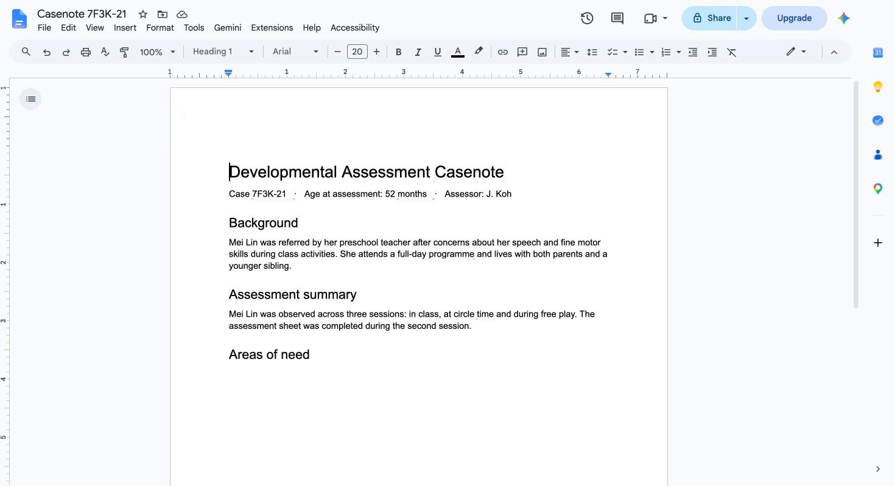

Han Sheng
Co-founder
I want to build a better world with AI, and that starts with the people doing the hardest work. I used to harden networks at CSIT, so keeping children's data safe matters to me as much as saving assessors time.
hansheng.devAn AI helper that drafts casenotes from your assessments,
right inside Word and Google Docs.

We're two computing students at NUS. As CCSGP fellows we met early-intervention assessors who are brilliant with kids, and then spend hours writing casenotes by hand. We want that time to go back to the children.
I want to build a better world with AI, and that starts with the people doing the hardest work. I used to harden networks at CSIT, so keeping children's data safe matters to me as much as saving assessors time.
hansheng.devSitting with assessors, I saw how much of their week goes into casenotes instead of children. Assessmate is how I want to give that time back.
pranavpappu.dev